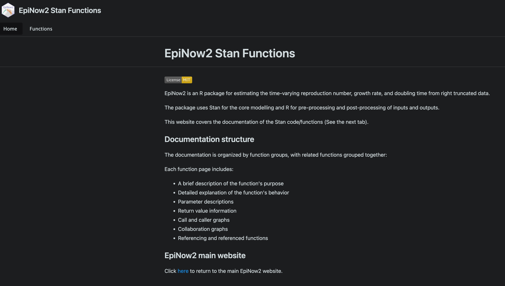

How we document stan functions
An example with EpiNow2
Stan is a probabilistic programming language widely used for Bayesian modelling and inference. While Stan excels at expressing complex statistical models, reading and understanding Stan code involves becoming familiar with the specific way models are written down, creating a barrier to using and contributing to models written in Stan. In our group we have used Stan extensively, for example in the EpiNow2 package for modelling and forecasting infectious disease time series.
Documenting Stan functions used in packages like EpiNow2 addresses several needs in collaborative research environments. First, it enables knowledge transfer when team members join or leave, ensuring that models remain accessible and maintainable. Second, well-documented functions reduce debugging time and prevent errors by clearly explaining parameter expectations, mathematical formulations, and edge cases. Third, comprehensive documentation facilitates code review processes, allowing colleagues to verify model implementations against theoretical foundations. Finally, public documentation of research code enhances reproducibility and enables the broader scientific community to build upon and validate epidemiological methods.
This guide explains how we document Stan functions in EpiNow2 using Doxygen. It covers both the technical setup and our documentation approach.
Documentation Setup
Tools and Installation
We use Doxygen to generate documentation from our Stan functions. Doxygen requires:
- CMake
- A C++ compiler
Note: For Mac OS Sonoma users, see installation notes here.
Directory Structure and Configuration
Our Stan documentation lives in inst/stan/docs/ and consists of:
Doxyfile: Main configuration file that:- Treats Stan as C++ code via
EXTENSION_MAPPING=stan=C++ - Points to
mainpage.mdas the landing page - Uses
DoxygenLayout.xmlfor custom layout
- Treats Stan as C++ code via
Generate the Doxyfile using the following command:
doxygen -gAlternatively, you can use the doxywizard GUI to generate the Doxyfile.
You can then edit the Doxyfile to change the configuration.
Documentation Organization
The documentation is organized into the following files:
common_docs.stan: Defines function groupsDoxygenLayout.xml: Customizes navigation structuremainpage.md: Landing page content
Function Groups
We organize functions into logical groups that reflect EpiNow2’s core capabilities:
- Estimation functions:
infections_estimation: Infection trajectory estimationrt_estimation: Reproduction number estimationsecondary_reports_estimation: Secondary epidemiological reports
- Model components and helpers:
observation_model: Observation process functionsestimates_smoothing: Gaussian process smoothinghandlers_and_helpers: Utility functions and parameter handlers
License
We also link the license so that potential re-use and attribution are treated in an appropriate manner .
Groupings
- The estimation functions are grouped by purpose and treated as the main groups.
- The observation model functions are linked to all main groups since they are used in all estimation groups.
- The helper functions are grouped under handlers_and_helpers and are used in all estimation groups since they are not specific to a single estimation group.
Webpage Themes
We use the awesome doxygen-awesome theme to override the default doxygen theme and prettify it. In short, we:
- Download the relevant files, i.e., all files beginning with
doxygen-awesome-, from the root directory of the doxygen-awesome github repository and place them in the./inst/stan/docsdirectory. - Link the theme file (
doxygen-awesome.css) to the./inst/stan/docs/doxyfileby passing the path to thedoxygen-awesome.cssfile to thedoxyfiletagHTML_EXTRA_STYLESHEET.
The default doxygen-awesome theme can be modified by modifying the css and javascript file and there are great examples here.
Building Documentation
Manually
# Navigate to the directory with the Doxyfile
cd inst/stan/docs
# Generate the documentation
doxygen DoxyfileAutomatically with GitHub Actions
Documentation can be automatically built and deployed to github pages as part of the release process. This is triggered when a pull request is merged into main. See the workflow we use here.
Viewing the Documentation

Local Access
Open inst/stan/docs/html/index.html in your browser
Online Access
Visit https://epiforecasts.github.io/EpiNow2/stan/
Note that this is only possible when it has been merged into the main branch and hence, rendered by the workflow.
Challenges with Doxygen
One of the neat features of R’s Roxygen2 package is the ability to intelligently deduplicate documentation. For example, if you have a function that is a simple wrapper around another function, you can use the @inheritparams tag to inherit the documentation from the original function. Doxygen does not have this feature. It has the @copydoc tag which can be used to copy the documentation from another function but this does not allow for intelligent deduplication. Doxygen’s @copydoc allows you to use shared parameter documentation but is not as smart as the Roxygen2 @inheritparams to order parameter names according to the function signature and to remove unused parameters. If you want the arguments in the order that they appear in the function signature, you end up with two “Parameter” headings, one coming from the documentation of specific params using @param and another coming from @copydoc. Unfortunately, there is no way to configure @copydoc to at least drop its section title. You can get one heading if you document the other parameters after the @copydoc call but that means the parameters are not in the order in which they appear in the function signature.
Resources
Doxygen documention:
Style guides:
- Doxygen style guide
- OpenOCD Doxygen Style Guide
- Carnegie Mellon Department of Computer Science Coding Style and Doxygen Documentation
- Apache Mesos Doxygen Style Guide
Doxygen in action:
Reuse
Citation
@online{mba_azam2025,
author = {Mba Azam, James},
title = {How We Document Stan Functions},
date = {2025-03-19},
url = {https://epiforecasts.io/posts/2025-03-19-stan-doc-guide/},
doi = {10.59350/rf7qp-vy339},
langid = {en}
}